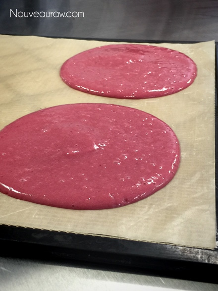
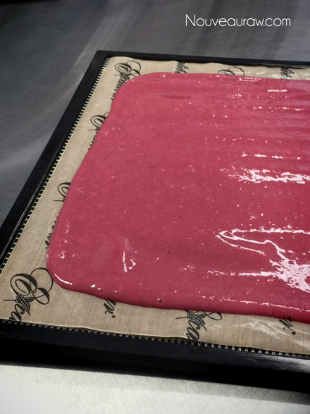

Strawberry Banana Crepes

~ raw, vegan, gluten-free, nut-free ~
We all love to have tricks up our sleeves when it comes to serving wholesome, delicious meals to our friends and family, right? And with our hectic lifestyles, we want to spend the least amount of time preparing our food so we can spend more time enjoying our food!
Abracadabra!
Ok, so it isn’t always that easy but trust me, this dessert can go together within minutes… as long as you have some crepes tucked away. To make the crepes, you will need to dehydrate them, but once made and properly stored, they can keep for six to twelve months!
For this crepe dessert, I spread some Raw Strawberry Date Jam down the center, piped in some Coconut Whipped Cream and topped it off with some diced strawberries. Simple, elegant, and nutritious. Oh, last week I shared how to make whipped cream with cashews… that would be heavenly with this.
So, go ahead and open up the fridge door… peer in… take your time. Use any jam, jelly, nut butter, and fresh fruit that you have on hand.
These crepes can also be enjoyed as a fruit leather. Tuck them in your purse, kids lunch pail or your husband’s front shirt pocket. You can dry the crepes in circles as I did in the photo above, or spread them out to one large square, cutting them into strips once dried. Be creative and have fun with them. Keep me posted if you give the recipe and try and share your creations with me. Many blessings, amie sue
yields 3 cups batter
- 3 bananas (395 g peeled)
- 1 1/2 cups (230 g) organic strawberries
- 2 Tbsp beet juice
- Dash or two Himalayan pink salt
Preparation:
- Place bananas, strawberries, beet juice and salt in a food processor or blender and blend until smooth.
- Pour the batter onto the teflex sheet that comes with the dehydrator.
- Spread about 1/8- inch thick.
- You can create any size circles that you want or one large sheet that can be cut into square shapes once dried.
- Dehydrate at 115 degrees (F) for 14 hours or less.
- Begin checking the bananas every few hours until they are formed, pliable, and solid in texture, but not letting the edges get crispy.
- Bananas don’t dry hard, they usually always remain pliable.
- Eat as is or create a wonderful crepe-like dessert filled endless ingredients.
- Wrap the crepes individually with plastic wrap and store in a zip-lock bag at room temperature. They can literally last up to a year.
Culinary Explanations:
- When working with fresh ingredients, it is important to taste test as you build a recipe. Learn why (here).
- Don’t own a dehydrator? Learn how to use your oven (here). I do however truly believe that it is a worthwhile investment. Click (here) to learn what I use.


© AmieSue.com